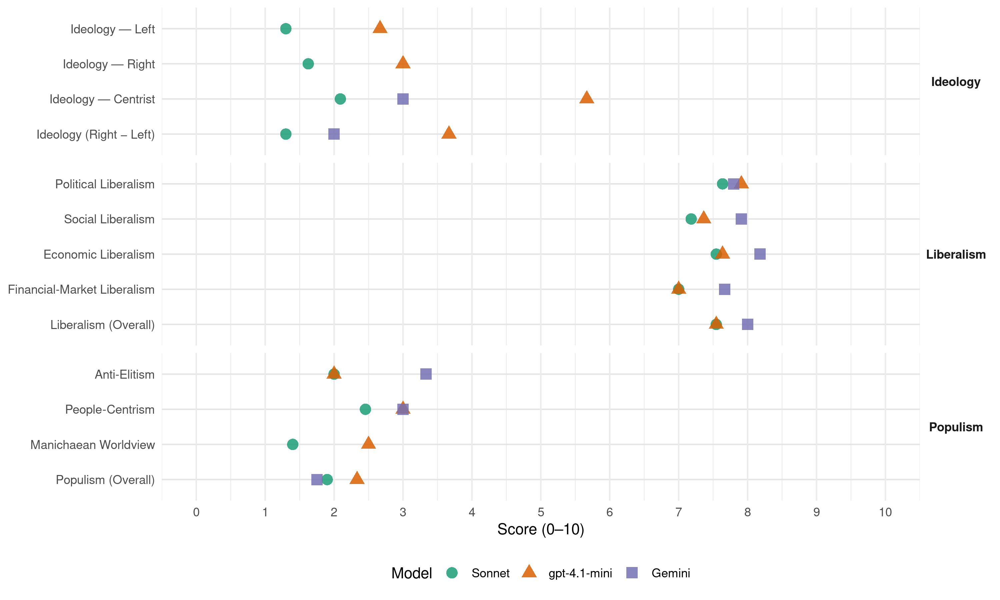

MR (Belgium, 2007)
manifesto_id 21426_200706
Get full text: This site shows derived annotations and short verbatim quotes only. The full manifesto text is © Manifesto Project / WZB — obtain it via manifesto-project.wzb.eu using the manifesto_id above.
Headline scores
| Dimension | Sonnet | gpt-4.1-mini | Gemini |
|---|---|---|---|
| Populism (Overall) | 1.9 | 2.3 | 1.8 |
| Anti-Elitism | 2.0 | 2.0 | 3.3 |
| People-Centrism | 2.5 | 3.0 | 3.0 |
| Manichaean Worldview | 1.4 | 2.5 | – |
| Ideology (Right − Left) | 1.3 | 3.7 | 2.0 |
| Liberalism (Overall) | 7.5 | 7.5 | 8.0 |
| Political Liberalism | 7.6 | 7.9 | 7.8 |
| Social Liberalism | 7.2 | 7.4 | 7.9 |
| Economic Liberalism | 7.5 | 7.6 | 8.2 |
| Financial-Market Liberalism | 7.0 | 7.0 | 7.7 |
Evidence per dimension
Economic Liberalism
Gemini · score 9.0 · verified · chunk 1
“retrouver toute leur liberté d’entreprendre”
les entreprises doivent retrouver toute leur liberté d’entreprendre pour créer de l’emploi.
Gemini · score 9.0 · verified · chunk 2
“diminution de la pression fiscale sur les revenus”
les 4 axes : - diminution de la pression fiscale sur les revenus du travail (modification des barèmes
Gemini · score 8.0 · verified · chunk 3
“création et du développement d’entreprises”
Le MR fait de la création et du développement d’entreprises, ainsi que de l’encouragement de
Gemini · score 8.0 · verified · chunk 4
“mise en concurrence réelle des secteurs hospitaliers”
relations entre médecins hospitaliers et gestionnaires. Une mise en concurrence réelle des secteurs hospitaliers, public et privé, confessionnel et non
Gemini · score 8.0 · verified · chunk 5
“partenariat avec le secteur privé”
Il faut donc imaginer un financement complémentaire qui passe par un partenariat avec le secteur privé. Cette formule a fait ses preuves dans d’autres pays
Gemini · score 8.0 · verified · chunk 6
“développer un véritable marché concurrentiel”
il convient de favoriser le développement d’un véritable marché concurrentiel, qui verra plusieurs opérateurs se côtoyer
Gemini · score 9.0 · verified · chunk 7
“défenseur naturel des entrepreneurs”
Le MR, défenseur naturel des entrepreneurs, a toujours adopté une politique d’encouragement
Gemini · score 7.0 · verified · chunk 8
“favoriser la mise en concurrence de la fourniture”
industries qui utilisent beaucoup d’eau afin de préserver leur compétitivité. De favoriser la mise en concurrence de la fourniture d’eau par les gros producteurs
Gemini · score 9.0 · verified · chunk 9
“règles du marché intérieur”
sans soustraire ce pan vital de notre économie aux règles du marché intérieur.
Gemini · score 8.0 · verified · chunk 10
“libre-échange, conjugué à de saines politiques”
Le libre-échange, conjugué à de saines politiques intérieures (bonne gouvernance, …), peut démultiplier
Gemini · score 7.0 · verified · chunk 11
“meilleure synergie avec le secteur privé”
missions de recherche pure, -D’une meilleure synergie avec le secteur privé, entre autres via une loi sur le mécénat
gpt-4.1-mini · score 9.0 · verified · chunk 1
“réduction des charges sociales et fiscales, soutien aux entreprises, libre entreprise”
Nous proposons : Poursuivre la réduction des charges sociales et fiscales, soutenir les entreprises, promouvoir la libre entreprise et la concurrence.
gpt-4.1-mini · score 8.0 · verified · chunk 2
“réduction de la pression fiscale sur les revenus du travail”
La réforme de l’impôt des personnes physiques comporte 4 axes : - diminution de la pression fiscale sur les revenus du travail (modification des barèmes, suppression des taux les plus élevés, introduction du crédit d’impôt remboursable) ;
gpt-4.1-mini · score 7.0 · verified · chunk 3
“simplification administrative en veillant notamment à optimaliser le fonctionnement du guichet unique”
Le constat : Le programme du MR de 2003 visait les lignes d’action suivantes : Poursuivre la simplification administrative en veillant notamment à optimaliser le fonctionnement du guichet unique. Continuer à développer l’e-gouvernement tout en permettant aux citoyens qui le souhaitent de continuer à utiliser des supports papier.
gpt-4.1-mini · score 7.0 · verified · chunk 4
“libéralisation des marchés, réduction des charges, revalorisation des actes”
Le MR a mis les prestataires de soins au cœur de ses préoccupations en plaidant pour le retour et le maintien d’une concertation avec tous les acteurs de la santé. Favorable à la valorisation de l’acte intellectuel, le MR plaidait pour que le travail et le rôle de l’ensemble des prestataires, quels qu’ils soient, soit revalorisé.
gpt-4.1-mini · score 7.0 · verified · chunk 5
“incitation fiscale en faveur de la production audiovisuelle”
De nouvelles sources de financement pour intensifier et faciliter la production et la valorisation culturelle: Œ Incitation fiscale en faveur de la production audiovisuelle : l’introduction du tax shelter par Didier Reynders, qui permet à des sociétés résidentes en Belgique de bénéficier d’une exonération des sommes investies.
gpt-4.1-mini · score 7.0 · verified · chunk 6
“libéralisation du secteur postal”
Poursuivre la modernisation de l’Entreprise publique « La Poste » tout en garantissant le maintien d’un service universel de qualité et de conditions de travail acceptables pour les postiers.
gpt-4.1-mini · score 9.0 · verified · chunk 7
“défenseur naturel des entrepreneurs, a toujours adopté une politique d’encouragement des initiatives privées”
Le MR, défenseur naturel des entrepreneurs, a toujours adopté une politique d’encouragement des initiatives privées, de valorisation du travail des indépendants et des sociétés et enfin, de responsabilisation des acteurs économique.
gpt-4.1-mini · score 8.0 · verified · chunk 8
“investissements en recherche”
Des mesures fiscales ont été prises par le Ministre fédéral des Finances afin d’encourager la R&D : Dispense de versement de précompte professionnel pour les chercheurs. Exonération des primes d’innovation (prolongation jusqu’au 31 décembre 2008). Mesures ciblées favorisant les investissements en recherche.
gpt-4.1-mini · score 7.0 · verified · chunk 9
“libéralisation des services, notamment des transports, de l’énergie, des télécommunications”
Il faut oser jouer sur les avantages compétitifs nés de la libéralisation des services, notamment des transports, de l’énergie, des télécommunications.
gpt-4.1-mini · score 8.0 · verified · chunk 10
“le commerce au service du développement”
Il faut mettre le commerce au service du développement. Une libéralisation commerciale ne se traduit pas automatiquement par une hausse des exportations et ce en raison des contraintes qui existent sur l’offre des pays les moins avancés (PMA) : manque d’infrastructures, difficultés d’ajustement, manque de diversification des économies, etc.
gpt-4.1-mini · score 7.0 · verified · chunk 11
“La politique scientifique assume les missions fédérales culturelles et scientifiques, à travers ces dix institutions”
La politique scientifique assume les missions fédérales culturelles et scientifiques, à travers ces dix institutions. Les mandataires flamands par la voix de Bert ANCIAUX, de parlementaires de la NV-a ou CD&V du Vlaamse Raad, ont exprimé à suffisance leur exigence de défédéralisation de cette matière
Sonnet · score 9.0 · verified · chunk 1
“baisse des différentes impositions”
la poursuite des réformes fiscales, sociales et administratives visant la création d’activité par la baisse des différentes impositions
Sonnet · score 8.0 · verified · chunk 2
“baisse générale de la pression fiscale”
Soutenir l’économie par une baisse générale de la pression fiscale est un préalable. La Belgique doit s’inscrire dans la tendance à la baisse
Sonnet · score 8.0 · verified · chunk 3
“création et du développement d’entreprises”
Le MR fait de la création et du développement d’entreprises, ainsi que de l’encouragement de l’esprit d’initiative, des objectifs prioritaires
Sonnet · score 7.0 · verified · chunk 4
“mise en concurrence réelle des secteurs hospitaliers, public et privé”
le MR propose une mise en concurrence des hôpitaux publics et privés, avec autonomie budgétaire et responsabilité financière identiques aux entreprises privées
Sonnet · score 7.0 · verified · chunk 5
“partenariat avec le secteur privé”
il faut donc imaginer un financement complémentaire qui passe par un partenariat avec le secteur privé. Cette formule a fait ses preuves dans d’autres pays
Sonnet · score 7.0 · verified · chunk 6
“véritable marché concurrentiel”
il convient de favoriser le développement d’un véritable marché concurrentiel, qui verra plusieurs opérateurs se côtoyer, au bénéfice du consommateur
Sonnet · score 8.0 · verified · chunk 7
“amélioration de la concurrence”
Une amélioration de la concurrence, en rendant les marchés publics désormais concrètement accessibles à toutes les entreprises
Sonnet · score 7.0 · verified · chunk 8
“favoriser des partenariats public-privé”
De favoriser des partenariats public-privé dans ce domaine, notamment pour obtenir le meilleur rapport qualité/prix
Sonnet · score 8.0 · verified · chunk 9
“achèvement du Marché unique dans le domaine des services”
Le second objectif sera de parachever le Marché unique, afin de faire bénéficier les consommateurs et les citoyens de gains obtenus grâce à ce marché intérieur. L’achèvement du Marché unique dans le domaine des services est une première priorité
Sonnet · score 8.0 · verified · chunk 10
“zone de libre-échange Euromed pour 2010”
dans le but de réaliser l’objectif économique d’une zone de libre-échange Euromed pour 2010
Sonnet · score 6.0 · verified · chunk 11
“meilleure synergie avec le secteur privé”
D’une meilleure synergie avec le secteur privé, entre autres via une loi sur le mécénat qui vise l’ensemble du secteur culturel et scientifique
Financial-Market Liberalism
Gemini · score 8.0 · verified · chunk 1
“faciliter aux PME l’accès au capital à risque”
Mise en place des Pricaf privées en vue de faciliter aux PME l’accès au capital à risque ; Extension de la directive
Gemini · score 8.0 · verified · chunk 2
“faciliter l’accès au capital-risque pour les PME”
sociétés d’investissement privées (PRICAF) en vue de faciliter l’accès au capital-risque pour les PME.
Gemini · score 8.0 · verified · chunk 3
“marchés non réglementés, s’adressant aux petites”
Ces marchés sont des marchés non réglementés, s’adressant aux petites et moyennes entreprises et leur permettant de
Gemini · score 8.0 · verified · chunk 5
“créant des fonds d’investissements auprès des organismes financiers”
étendre le champ d’application du tax shelter à d’autres secteurs de la culture que la production cinématographique structurer et consolider le tax shelter en créant des fonds d’investissements auprès des organismes financiers belges.
Gemini · score 7.0 · verified · chunk 6
“créant des fonds d’investissements auprès des organismes financiers belges”
et consolider le tax shelter en créant des fonds d’investissements auprès des organismes financiers belges. Œ dation en paiement
Gemini · score 8.0 · verified · chunk 7
“confiance des investisseurs dans les sociétés”
de manière, à renforcer la confiance des investisseurs dans les sociétés. Ces pratiques doivent profiter
Gemini · score 7.0 · verified · chunk 8
“en collaboration avec le secteur bancaire”
investissements en économie d’énergie dans les habitations, en collaboration avec le secteur bancaire, les producteurs et les installateurs
Gemini · score 8.0 · verified · chunk 9
“stabilité économique et financière”
soutenus du niveau de vie ainsi qu’à la stabilité économique et financière.
Gemini · score 7.0 · verified · chunk 10
“partenariat économique et financier”
Volet économique et financier : construction d’une zone de prospérité partagée au moyen d’un partenariat économique et financier et l’instauration
gpt-4.1-mini · score 7.0 · verified · chunk 1
“crédit d’impôt pour recherche et développement, déduction pour investissement”
Mesures fiscales : crédit d’impôt pour recherche et développement, déduction pour investissement pour les PME, suppression du droit d’enregistrement sur les apports en société.
gpt-4.1-mini · score 7.0 · verified · chunk 2
“service du ruling”
La mise en place du service du ruling. La mise en plac e d’un conciliateur fiscal.
gpt-4.1-mini · score 7.0 · verified · chunk 3
“Dématérialisation des titres au porteur. Modernisation du droit belge des titres.”
Dématérialisation des titres au porteur. Modernisation du droit belge des titres. Désormais, compte tenu des progrès techniques, il est plus opportun de privilégier l’utilisation de titres dématérialisés, lesquels concilient la facilité de transmission avec le souci de sécurité.
gpt-4.1-mini · score 8.0 · verified · chunk 7
“importance d’un système de bonne gouvernance d’entreprise”
Ces scandales ont mis en lumière l’importance d’un système de bonne gouvernance d’entreprise. Le MR a toujours été convaincu de l’utilité pour le monde des entreprises de se doter d’un code de « best practices »
gpt-4.1-mini · score 6.0 · verified · chunk 9
“la Banque Européenne d’Investissement a un rôle majeur à jouer”
La mise en place de conditions et d’incitants européens pour l’innovation et l’entrepreneuriat, et le soutien de la Recherche-Développement est tout aussi essentielle. Nous estimons que la Banque Européenne d’Investissement a un rôle majeur à jouer dans ces domaines.
gpt-4.1-mini · score 7.0 · verified · chunk 10
“les institutions internationales susceptibles de jouer ce rôle de « régulateurs »”
Nous plaidons dès lors pour une approche multilatérale et pour le renforcement des institutions internationales dont le fonctionnement et la gouvernance doivent sans cesse être réformés et améliorés. Ce sont les seules instances capables de réguler efficacement le fonctionnement du système économique mondial, de promouvoir des règles de bonne gouvernance, d’assurer une régulation politique de l’économie, de permettre à tous les Etats – y compris les plus pauvres – de bénéficier des avantages du commerce international et, enfin, de défendre les intérêts des Etats les plus pauvres.
Sonnet · score 8.0 · verified · chunk 1
“faciliter aux PME l’accès au capital à risque”
Mise en place des Pricaf privées en vue de faciliter aux PME l’accès au capital à risque
Sonnet · score 7.0 · verified · chunk 2
“développement des micro-crédits”
Le développement des micro-crédits. Le relèvement des plafonds d’intervention publique de 25.000€ à 100.000€ via la SOWALFIN constituerait un effet levier robuste.
Sonnet · score 7.0 · verified · chunk 3
“marchés non réglementés”
Euronext Brussels a lancé son nouveau marché « Alternext » au mois de mai 2006 … Ces marchés sont des marchés non réglementés, s’adressant aux petites et moyennes entreprises et leur permettant de trouver une source alternative de financement
Sonnet · score 6.0 · verified · chunk 4
“constitution de 2ème et 3ème piliers, comme cela a été le cas pour les pensions”
le MR évoque la diversification du financement de la sécurité sociale et la constitution de piliers complémentaires privés, dans une logique de marché
Sonnet · score 7.0 · verified · chunk 5
“tax shelter aux particuliers”
ouvrir le tax shelter aux particuliers étendre le champ d’application du tax shelter à d’autres secteurs de la culture que la production cinématographique
Sonnet · score 7.0 · verified · chunk 6
“Vente par l’Etat de sa participation dans Belgacom”
Vente par l’Etat de sa participation dans Belgacom lorsque les conditions seront réunies afin que cette opération ait pour effet de pérenniser l’entreprise
Sonnet · score 8.0 · verified · chunk 7
“renforcer la confiance des investisseurs”
des pratiques de gouvernance d’entreprise efficaces doivent être basées sur la transparence et la responsabilité de manière, à renforcer la confiance des investisseurs dans les sociétés
Sonnet · score 6.0 · verified · chunk 8
“fonds de placements éthiques”
D’intégrer les projets de développement d’énergies durables dans le concept de fonds de placements éthiques
Sonnet · score 7.0 · verified · chunk 9
“la directive sur les services financiers”
Nous proposons également d’adopter rapidement une série de textes législatifs européens, tels que : la directive-cadre sur les services d’intérêt général, la directive sur les services financiers, la directive sur les marchés publics
Sonnet · score 7.0 · verified · chunk 10
“services financiers, agriculture et développement durable”
geler les négociations sur 8 chapitres de l’acquis communautaire : libre circulation des biens, droit d’établissement et libre fourniture de services, services financiers, agriculture et développement durable
Political Liberalism
Gemini · score 8.0 · verified · chunk 2
“Parlement wallon et celui de la Communauté”
De la même manière, le Parlement wallon et celui de la Communauté française doivent laisser la place
Gemini · score 7.0 · verified · chunk 3
“autorités de proximité, élues par les citoyens”
le pouvoir de décision est rendu aux autorités de proximité, élues par les citoyens (elles obtiennent une compétence
Gemini · score 7.0 · verified · chunk 4
“respect de la vie privée”
médicaux, en concertation avec les médecins et dans le respect de la vie privée. C2 Assurer le financement durable
Gemini · score 8.0 · verified · chunk 5
“garantis par l’article 24 de la Constitution”
Le droit à l’enseignement et la liberté de cet enseignement sont garantis par l’article 24 de la Constitution. En tant qu’étudiants, nous voulons que l’école
Gemini · score 8.0 · verified · chunk 6
“sauvegarder les valeurs démocratiques qui en sont le fondement”
dans l’appareil démocratique de notre Etat de droit, afin de sauvegarder les valeurs démocratiques qui en sont le fondement.
Gemini · score 8.0 · verified · chunk 7
“réforme du système électoral”
1. Réforme du système électoral et du fonctionnement des partis Le bilan
Gemini · score 8.0 · verified · chunk 8
“respectant évidemment intégralement les droits de la défense”
recours à une procédure simplifiée (respectant évidemment intégralement les droits de la défense). Quoi qu’il en soit, il faut surtout
Gemini · score 8.0 · verified · chunk 9
“principes de démocratie, de liberté”
Un projet politique fondé sur les principes de démocratie, de liberté, de responsabilité, de solidarité
Gemini · score 8.0 · verified · chunk 10
“renforcement de la démocratie et de l’Etat de droit”
Le renforcement de la démocratie et de l’Etat de droit, la mise en place d’une justice indépendante
Gemini · score 8.0 · verified · chunk 11
“garantirait les droits linguistiques des justiciables”
fonctionneraient désormais sur base unilingue ; -il garantirait les droits linguistiques des justiciables francophones domiciliés en périphérie, qui seraient mis
gpt-4.1-mini · score 8.0 · verified · chunk 1
“la démocratie, les droits, les élections, les tribunaux, les médias”
Le constat : Le Mouvement Réformateur soutient la démocratie, les droits, les élections, les tribunaux, les médias et la séparation des pouvoirs comme fondements essentiels de la société.
gpt-4.1-mini · score 8.0 · verified · chunk 2
“la charte du contribuable”
Veiller à l’application pleine et entière de la charte du contribuable et à l’extension de celle-ci sur base des premiers rapports du conciliateur fiscal.
gpt-4.1-mini · score 8.0 · verified · chunk 3
“le respect des principes de liberté de choix pour le patient”
Le MR fonde sa politique de santé sur des valeurs telles que la liberté, la solidarité, la proximité et la performance. Cela implique le respect des principes de liberté de choix pour le patient (choix de son prestataire, choix de son établissement de soins, choix de sa mutuelle et, le cas échéant, choix d’opter pour une assurance complémentaire proposée par une mutuelle ou un assureur privé) et de liberté thérapeutique et diagnostique pour les prestataires de soins.
gpt-4.1-mini · score 8.0 · verified · chunk 4
“liberté diagnostique et thérapeutique du médecin, le secret professionnel”
Le MR a toujours affirmé notre volonté de garantir les conditions de l’exercice d’une médecine de qualité à travers le libre choix du patient, la liberté diagnostique et thérapeutique du médecin, le secret professionnel, la protection de la vie privée, l’accessibilité de tous aux soins de qualité et le développement de la solidarité interpersonnelle.
gpt-4.1-mini · score 8.0 · verified · chunk 5
“Le droit à l’enseignement et la liberté de cet enseignement sont garantis par l’article 24 de la Constitution”
D1 L’enseignement : qualité, liberté, égalité des chances Le constat : Le droit à l’enseignement et la liberté de cet enseignement sont garantis par l’article 24 de la Constitution. En tant qu’étudiants, nous voulons que l’école (générale, technique ou professionnelle) et l’université nous garantissent une formation solide, durable et qui nous ouvre les portes d’un métier, d’un emploi, de l’émancipation et de la réussite.
gpt-4.1-mini · score 8.0 · verified · chunk 6
“Le principe de laïcité de l’Etat dans la Constitution”
Le Mouvement réformateur propose donc d’inscrire le principe de laïcité de l’Etat dans la Constitution, dans le Titre Ier bis relatif aux objectifs de politique générale de l’Etat, des Communautés et des Régions.
gpt-4.1-mini · score 8.0 · verified · chunk 7
“le respect, et de faire respecter, à la lettre, les règles existantes”
Comme le prône et le fait le MR, il convient de respecter, et de faire respecter, à la lettre, les règles existantes ; cela se révèle beaucoup plus efficace et clair que de prévoir, comme certains le veulent, une série de « livres blancs » ou de règles « sur mesure ».
gpt-4.1-mini · score 7.0 · verified · chunk 8
“la Constitution, comme principe devant guider l’action des autorités publiques”
L’inscription du développement durable dans la Constitution, comme principe devant guider l’action des autorités publiques. Projet EMAS dont l’objectif est que chaque service public puisse obtenir une certification EMAS, c’est-à-dire la reconnaissance d’un système de gestion et d’audit environnemental européen, reconnu par la Commission européenne et visant une amélioration continue des performances de toutes les organisations européennes en matière de respect de l’environnement.
gpt-4.1-mini · score 8.0 · verified · chunk 9
“une justice humaine, équilibrée, transparente dans ses procédures”
Il faut poursuivre les efforts allant dans le sens d’une justice humaine, équilibrée, transparente dans ses procédures et accueillante vis-à-vis des justiciables.
gpt-4.1-mini · score 9.0 · verified · chunk 10
“la démocratie, les droits de l’homme, la justice et la démocratie sont des droits intangibles”
Les libertés fondamentales, la dignité humaine, la justice et la démocratie sont des droits intangibles et inaliénables. Ils font partie du patrimoine universel des nations. Respecter l’autre dans sa dignité, c’est aussi lutter contre son exclusion dans le domaine économique et social, assurer la protection de ses droits économiques et sociaux et lui en garantir l’exercice.
gpt-4.1-mini · score 7.0 · verified · chunk 11
“Le Mouvement Réformateur réaffirme toute son opposition à toute forme de régionalisation des matières liées à la Justice”
Le Mouvement Réformateur réaffirme toute son opposition à toute forme de régionalisation des matières liées à la Justice. Plusieurs partis flamands souhaitent une scission des juridictions sur une base régionale et un pouvoir d’injonction régionale sur les poursuites.
Sonnet · score 7.0 · verified · chunk 1
“répartition des compétences respectives de l’Etat fédéral”
sans toucher à la répartition des compétences respectives de l’Etat fédéral et des entités fédérées
Sonnet · score 8.0 · verified · chunk 2
“simplifier les institutions et la répartition des compétences”
Il est temps désormais de simplifier les institutions et la répartition des compétences au sein de l’espace francophone. Le schéma institutionnel doit regagner en clarté et en efficacité.
Sonnet · score 7.0 · verified · chunk 3
“liberté de choix pour le patient”
Cela implique le respect des principes de liberté de choix pour le patient (choix de son prestataire, choix de son établissement de soins, choix de sa mutuelle)
Sonnet · score 7.0 · verified · chunk 4
“transparence (y compris la motivation des décisions)”
le texte appelle à la réforme de la Commission de remboursement des médicaments pour plus de transparence et de motivation des décisions, valeurs libérales politiques
Sonnet · score 7.0 · verified · chunk 5
“dépolitiser les cadres du ministère”
Il est temps de quitter le système féodal actuel et : De dépolitiser les cadres du ministère de la Communauté française, des organismes subsidiés et des organismes consultatifs
Sonnet · score 8.0 · verified · chunk 6
“renforçant la gouvernance et la démocratie”
Comment réhabiliter la politique en renforçant la gouvernance et la démocratie ? Comment renouer les liens de confiance
Sonnet · score 8.0 · verified · chunk 7
“renforcer la gouvernance et la démocratie”
Comment réhabiliter la politique en renforçant la gouvernance et la démocratie ? Comment renouer les liens de confiance
Sonnet · score 8.0 · verified · chunk 8
“droits de la défense”
procédure simplifiée (respectant évidemment intégralement les droits de la défense)
Sonnet · score 8.0 · verified · chunk 9
“fondé sur les principes de démocratie, de liberté, de responsabilité”
Un projet politique fondé sur les principes de démocratie, de liberté, de responsabilité, de solidarité et de tolérance, et sur une approche communautaire
Sonnet · score 9.0 · verified · chunk 10
“renforcement de la démocratie et de l’Etat de droit”
les efforts à mener en termes de gouvernance, de démocratie, d’Etat de Droit sont absolument essentiels pour assurer la réussite du processus de développement
Sonnet · score 7.0 · verified · chunk 11
“principes démocratiques fondamentaux”
Ces modèles vont à l’encontre des principes démocratiques fondamentaux, des intérêts des habitants de la région et de sa prospérité.
Liberalism (Overall)
Gemini · score 8.0 · verified · chunk 1
“retrouver toute leur liberté d’entreprendre”
les entreprises doivent retrouver toute leur liberté d’entreprendre pour créer de l’emploi.
Gemini · score 8.0 · verified · chunk 2
“diminution de la pression fiscale sur les revenus”
les 4 axes : - diminution de la pression fiscale sur les revenus du travail (modification des barèmes
Gemini · score 8.0 · verified · chunk 3
“création et du développement d’entreprises”
Le MR fait de la création et du développement d’entreprises, ainsi que de l’encouragement de
Gemini · score 8.0 · verified · chunk 4
“mise en concurrence réelle des secteurs hospitaliers”
relations entre médecins hospitaliers et gestionnaires. Une mise en concurrence réelle des secteurs hospitaliers, public et privé, confessionnel et non
Gemini · score 8.0 · verified · chunk 5
“partenariat avec le secteur privé”
Il faut donc imaginer un financement complémentaire qui passe par un partenariat avec le secteur privé. Cette formule a fait ses preuves dans d’autres pays
Gemini · score 8.0 · verified · chunk 6
“développer un véritable marché concurrentiel”
il convient de favoriser le développement d’un véritable marché concurrentiel, qui verra plusieurs opérateurs se côtoyer
Gemini · score 8.0 · verified · chunk 7
“défenseur naturel des entrepreneurs”
Le MR, défenseur naturel des entrepreneurs, a toujours adopté une politique d’encouragement
Gemini · score 8.0 · verified · chunk 8
“respectant évidemment intégralement les droits de la défense”
recours à une procédure simplifiée (respectant évidemment intégralement les droits de la défense). Quoi qu’il en soit, il faut surtout
Gemini · score 8.0 · verified · chunk 9
“projet d’inspiration éminemment libérale”
Le concept même de construction européenne est un projet d’inspiration éminemment libérale.
Gemini · score 8.0 · verified · chunk 10
“renforcement de la démocratie et de l’Etat de droit”
Le renforcement de la démocratie et de l’Etat de droit, la mise en place d’une justice indépendante
Gemini · score 8.0 · verified · chunk 11
“garantirait les droits linguistiques des justiciables”
fonctionneraient désormais sur base unilingue ; -il garantirait les droits linguistiques des justiciables francophones domiciliés en périphérie, qui seraient mis
gpt-4.1-mini · score 8.0 · verified · chunk 1
“réduction des charges sociales et fiscales, soutien aux entreprises, libre entreprise”
Nous proposons : Poursuivre la réduction des charges sociales et fiscales, soutenir les entreprises, promouvoir la libre entreprise et la concurrence.
gpt-4.1-mini · score 8.0 · verified · chunk 2
“réduction de la pression fiscale sur les revenus du travail”
La réforme de l’impôt des personnes physiques comporte 4 axes : - diminution de la pression fiscale sur les revenus du travail (modification des barèmes, suppression des taux les plus élevés, introduction du crédit d’impôt remboursable) ;
gpt-4.1-mini · score 7.0 · verified · chunk 3
“Le MR fonde sa politique de santé sur des valeurs telles que la liberté, la solidarité, la proximité et la performance.”
Le MR fonde sa politique de santé sur des valeurs telles que la liberté, la solidarité, la proximité et la performance. Cela implique le respect des principes de liberté de choix pour le patient (choix de son prestataire, choix de son établissement de soins, choix de sa mutuelle et, le cas échéant, choix d’opter pour une assurance complémentaire proposée par une mutuelle ou un assureur privé) et de liberté thérapeutique et diagnostique pour les prestataires de soins.
gpt-4.1-mini · score 7.0 · verified · chunk 4
“liberté diagnostique et thérapeutique du médecin, le secret professionnel”
Le MR a toujours affirmé notre volonté de garantir les conditions de l’exercice d’une médecine de qualité à travers le libre choix du patient, la liberté diagnostique et thérapeutique du médecin, le secret professionnel, la protection de la vie privée, l’accessibilité de tous aux soins de qualité et le développement de la solidarité interpersonnelle.
gpt-4.1-mini · score 8.0 · verified · chunk 5
“Le droit à l’enseignement et la liberté de cet enseignement sont garantis par l’article 24 de la Constitution”
D1 L’enseignement : qualité, liberté, égalité des chances Le constat : Le droit à l’enseignement et la liberté de cet enseignement sont garantis par l’article 24 de la Constitution. En tant qu’étudiants, nous voulons que l’école (générale, technique ou professionnelle) et l’université nous garantissent une formation solide, durable et qui nous ouvre les portes d’un métier, d’un emploi, de l’émancipation et de la réussite.
gpt-4.1-mini · score 8.0 · verified · chunk 6
“Le Mouvement réformateur propose donc d’inscrire le principe de laïcité de l’Etat dans la Constitution”
Le Mouvement réformateur propose donc d’inscrire le principe de laïcité de l’Etat dans la Constitution, dans le Titre Ier bis relatif aux objectifs de politique générale de l’Etat, des Communautés et des Régions.
gpt-4.1-mini · score 8.0 · verified · chunk 7
“le respect, et de faire respecter, à la lettre, les règles existantes”
Comme le prône et le fait le MR, il convient de respecter, et de faire respecter, à la lettre, les règles existantes ; cela se révèle beaucoup plus efficace et clair que de prévoir, comme certains le veulent, une série de « livres blancs » ou de règles « sur mesure ».
gpt-4.1-mini · score 7.0 · verified · chunk 8
“L’inscription du développement durable dans la Constitution, comme principe devant guider l’action des autorités publiques”
L’inscription du développement durable dans la Constitution, comme principe devant guider l’action des autorités publiques. Projet EMAS dont l’objectif est que chaque service public puisse obtenir une certification EMAS, c’est-à-dire la reconnaissance d’un système de gestion et d’audit environnemental européen, reconnu par la Commission européenne et visant une amélioration continue des performances de toutes les organisations européennes en matière de respect de l’environnement.
gpt-4.1-mini · score 7.0 · verified · chunk 9
“une justice humaine, équilibrée, transparente dans ses procédures”
Il faut poursuivre les efforts allant dans le sens d’une justice humaine, équilibrée, transparente dans ses procédures et accueillante vis-à-vis des justiciables.
gpt-4.1-mini · score 8.0 · verified · chunk 10
“le respect des droits de l’homme et des minorités doit être une priorité”
Le respect des droits de l’homme et des minorités doit être une priorité, afin d’inscrire la paix dans la durée. Il faut instaurer un dialogue entre les cultures, afin que tous aient envie de faire partie du même projet, celui d’un monde interdépendant.
gpt-4.1-mini · score 7.0 · verified · chunk 11
“Le Mouvement Réformateur réaffirme toute son opposition à toute forme de régionalisation des matières liées à la Justice”
Le Mouvement Réformateur réaffirme toute son opposition à toute forme de régionalisation des matières liées à la Justice. Plusieurs partis flamands souhaitent une scission des juridictions sur une base régionale et un pouvoir d’injonction régionale sur les poursuites.
Sonnet · score 8.0 · verified · chunk 1
“réformes fiscales, sociales et administratives”
la poursuite des réformes fiscales, sociales et administratives visant la création d’activité par la baisse des différentes impositions
Sonnet · score 8.0 · verified · chunk 2
“baisse générale de la pression fiscale”
Soutenir l’économie par une baisse générale de la pression fiscale est un préalable. La Belgique doit s’inscrire dans la tendance à la baisse
Sonnet · score 7.0 · verified · chunk 3
“encouragement de l’esprit d’initiative”
Le MR fait de la création et du développement d’entreprises, ainsi que de l’encouragement de l’esprit d’initiative, des objectifs prioritaires
Sonnet · score 7.0 · verified · chunk 4
“liberté diagnostique et thérapeutique du médecin”
le texte défend systématiquement la liberté individuelle des prestataires, la concurrence, la transparence et la responsabilisation, valeurs libérales classiques
Sonnet · score 7.0 · verified · chunk 5
“liberté d’expression, l’indépendance d’esprit”
ces objectifs participent des préoccupations fondamentales d’une culture fondée sur l’émancipation, la liberté d’expression, l’indépendance d’esprit, la responsabilité et le respect
Sonnet · score 8.0 · verified · chunk 6
“renforçant la gouvernance et la démocratie”
Comment réhabiliter la politique en renforçant la gouvernance et la démocratie ? Comment renouer les liens de confiance
Sonnet · score 8.0 · verified · chunk 7
“liberté et de responsabilité du secteur privé”
Défense des principes de liberté et de responsabilité du secteur privé face aux volontés interventionnistes lourdes et contre-productives
Sonnet · score 7.0 · verified · chunk 8
“favoriser des partenariats public-privé”
De favoriser des partenariats public-privé dans ce domaine, notamment pour obtenir le meilleur rapport qualité/prix
Sonnet · score 8.0 · verified · chunk 9
“concept même de construction européenne est un projet d’inspiration éminemment libérale”
Le concept même de construction européenne est un projet d’inspiration éminemment libérale. Ce projet de société, en moins de cinquante ans, a transformé un continent en ruine
Sonnet · score 8.0 · verified · chunk 10
“renforcement de la démocratie et de l’Etat de droit”
les efforts à mener en termes de gouvernance, de démocratie, d’Etat de Droit sont absolument essentiels pour assurer la réussite du processus de développement
Sonnet · score 7.0 · verified · chunk 11
“principes démocratiques fondamentaux”
Ces modèles vont à l’encontre des principes démocratiques fondamentaux, des intérêts des habitants de la région et de sa prospérité.
Anti-Elitism
Gemini · score 4.0 · verified · chunk 5
“l’hégémonie exercée depuis presque trente ans”
le parti socialiste se soit toujours présenté comme premier, voire unique défenseur de la culture, force est de constater que l’hégémonie exercée depuis presque trente ans sur la gestion culturelle laisse le secteur précarisé, inféodé à une idéologie d’Etat
Gemini · score 4.0 · verified · chunk 6
“débarrasser la gestion culturelle… du clientélisme”
Nous proposons: 1. Débarrasser la gestion culturelle de l’étranglement budgétaire et du clientélisme Il revient aux pouvoirs publics
Gemini · score 2.0 · verified · chunk 7
“limiter la politisation des nominations”
permettre de limiter la politisation des nominations. L’évaluation doit aussi permettre de sanctionner
gpt-4.1-mini · score 2.0 · verified · chunk 1
“le Mouvement Réformateur a toujours considéré que l’emploi ne se décrétait pas”
A1 L’emploi et la formation : un droit pour tous Le constat : Le Mouvement Réformateur a toujours considéré que l’emploi ne se décrétait pas. L’emploi peut par contre être stimulé. Pour ce faire, il faut travailler activement à moderniser l’environnement économique. Les entreprises doivent être soutenues.
gpt-4.1-mini · score 2.0 · verified · chunk 9
“sentiment d’impunité chez les auteurs d’infractions”
Le MR entend ainsi mettre tout en œuvre pour qu’existe une réaction pénale efficace afin d’éviter le développement d’un sentiment d’impunité chez les auteurs d’infractions doublé d’un sentiment d’insécurité et d’injustice chez la victime.
gpt-4.1-mini · score 2.0 · verified · chunk 10
“les revendications inacceptables des partis flamands”
…c’est le MR qui a donné aux Francophones la force de dire non aux revendications inacceptables des partis flamands. Il ne faut pas perdre de vue que l’évolution institutionnelle de l’Etat belge demeure soumise à des revendications toujours plus exorbitantes de certains partis politiques et groupes de pressions flamands, qui exercent un véritable chantage au confédéralisme, voire au séparatisme.
Sonnet · score 1.0 · verified · chunk 1
“inertie des coalitions social-chrétiennes”
nous ne pouvons malheureusement que constater l’inertie des coalitions social-chrétiennes en ce qui concerne les métiers en pénurie
Sonnet · score 1.0 · mixed · chunk 2
“mal-gouvernance au sud du pays”
une image déplorable et dégradée de la Wallonie, en raison de la mal-gouvernance au sud du pays…
Sonnet · score 2.0 · mixed · chunk 3
“politique souvent dirigiste et partisane”
on retrouve un manque évident de concertation avec les acteurs du secteur, mais aussi la poursuite d’une politique souvent dirigiste et partisane
Sonnet · score 2.0 · verified · chunk 4
“la politique du Ministre des Affaires sociales s’est plutôt inscrite dans le sens d’un renforcement des normes quantitatives”
critique du ministre socialiste des Affaires sociales, Rudy Demotte, présenté comme ayant failli à ses promesses et mal géré les dossiers
Sonnet · score 3.0 · verified · chunk 5
“hégémonie exercée depuis presque trente ans”
le parti socialiste se soit toujours présenté comme premier, voire unique défenseur de la culture, force est de constater que l’hégémonie exercée depuis presque trente ans sur la gestion culturelle laisse le secteur précarisé
Sonnet · score 4.0 · mixed · chunk 6
“système féodal actuel”
Il est temps de quitter le système féodal actuel et : De dépolitiser les cadres du ministère de la Communauté française
Sonnet · score 2.0 · mixed · chunk 7
“certains s’octroient des privilèges”
Il n’est en effet pas acceptable que certains s’octroient des privilèges, sans aucun souci de performance de l’entreprise, au détriment des épargnants
Sonnet · score 1.0 · mixed · chunk 8
“majorité PS-CDH au niveau”
projets du MR qui restent bloqués par la majorité PS-CDH au niveau
Sonnet · score 2.0 · verified · chunk 9
“projets du MR qui restent bloqués par la majorité PS-CDH”
il faut évidemment distinguer le travail accompli au fédéral par le MR et les projets du MR qui restent bloqués par la majorité PS-CDH au niveau de la Communauté française
Sonnet · score 2.0 · mixed · chunk 10
“chantage au confédéralisme, voire au séparatisme”
partis politiques et groupes de pressions flamands, qui exercent un véritable chantage au confédéralisme, voire au séparatisme
Sonnet · score 2.0 · verified · chunk 11
“volonté des mandataires politiques flamands”
La volonté des mandataires politiques flamands est d’avoir un pied dans la porte, et non de faire fonctionner ces institutions au profit de tous.
Ideology — Centrist
Gemini · score 3.0 · verified · chunk 5
“l’hégémonie exercée depuis presque trente ans”
le parti socialiste se soit toujours présenté comme premier, voire unique défenseur de la culture, force est de constater que l’hégémonie exercée depuis presque trente ans sur la gestion culturelle laisse le secteur précarisé, inféodé à une idéologie d’Etat
Gemini · score 3.0 · verified · chunk 6
“dépolitiser les cadres du ministère”
Il est temps de quitter le système féodal actuel et : De dépolitiser les cadres du ministère de la Communauté française
Gemini · score 3.0 · verified · chunk 7
“renouer les liens de confiance”
Comment renouer les liens de confiance qui doivent exister entre le citoyen, les
gpt-4.1-mini · score 7.0 · verified · chunk 1
“le Mouvement Réformateur a toujours considéré que l’emploi ne se décrétait pas”
A1 L’emploi et la formation : un droit pour tous Le constat : Le Mouvement Réformateur a toujours considéré que l’emploi ne se décrétait pas. L’emploi peut par contre être stimulé. Pour ce faire, il faut travailler activement à moderniser l’environnement économique. Les entreprises doivent être soutenues.
gpt-4.1-mini · score 4.0 · verified · chunk 9
“Le MR entend ainsi mettre tout en œuvre pour qu’existe une réaction pénale efficace”
Le MR entend ainsi mettre tout en œuvre pour qu’existe une réaction pénale efficace afin d’éviter le développement d’un sentiment d’impunité chez les auteurs d’infractions doublé d’un sentiment d’insécurité et d’injustice chez la victime.
gpt-4.1-mini · score 6.0 · verified · chunk 10
“Il n’y a pas de hiérarchisation à établir entre « approfondissement » et « élargissement » de l’Union européenne, les deux sont indispensables”
Sur la question de l’élargissement, le MR défend les positions suivantes : Il n’y a pas de hiérarchisation à établir entre « approfondissement » et « élargissement » de l’Union européenne, les deux sont indispensables ; L’élargissement de l’UE est un projet politique, la perspective d’adhésion offertes aux pays des Balkans, puis plus tard peut-être à d’anciennes républiques soviétiques comme l’Ukraine, est de nature à stabiliser et démocratiser le continent européen ;
Sonnet · score 2.0 · verified · chunk 1
“une place pour tous, un emploi pour chacun”
Le MR veut une place pour tous, un emploi pour chacun. Les jeunes ont à faire valoir leurs idées nouvelles
Sonnet · score 2.0 · verified · chunk 2
“rendre aux citoyens leur pouvoir de choix”
L’impôt doit ensuite rendre aux citoyens leur pouvoir de choix. La finalité première de l’impôt est de percevoir des recettes
Sonnet · score 2.0 · verified · chunk 3
“politique souvent dirigiste et partisane”
criticism of past government policy as dirigiste and partisan, without strong left or right populist framing
Sonnet · score 2.0 · verified · chunk 4
“Ce sont eux les véritables experts de la santé”
appel aux prestataires de soins comme experts légitimes face aux décisions politiques, légère rhétorique anti-establishment sans orientation idéologique claire
Sonnet · score 2.0 · verified · chunk 5
“accès du plus grand nombre”
L’objectif véritable de la subsidiation doit être l’accès du plus grand nombre à la connaissance et à la culture
Sonnet · score 3.0 · verified · chunk 6
“réhabiliter la politique en renforçant”
Comment réhabiliter la politique en renforçant la gouvernance et la démocratie ?
Sonnet · score 2.0 · verified · chunk 7
“renouer les liens de confiance”
Comment renouer les liens de confiance qui doivent exister entre le citoyen, les partis politiques et les institutions
Sonnet · score 2.0 · verified · chunk 8
“droit premier du citoyen”
La sécurité est un droit premier du citoyen dans la mesure où elle est le préalable
Sonnet · score 1.0 · verified · chunk 9
“une justice humaine, équilibrée, transparente”
Il faut poursuivre les efforts allant dans le sens d’une justice humaine, équilibrée, transparente dans ses procédures et accueillante vis-à-vis des justiciables
Sonnet · score 3.0 · verified · chunk 10
“rendre au citoyen son pouvoir de participer”
Le Mouvement Réformateur veut rendre au citoyen son pouvoir de participer directement à la décision politique
Sonnet · score 2.0 · verified · chunk 11
“intérêt des citoyens”
structurer les institutions francophones selon des critères de fonctionnalité, dans l’intérêt des citoyens, des personnes actives sur le terrain
Ideology — Left
gpt-4.1-mini · score 3.0 · verified · chunk 1
“maintien des solidarités interpersonnelles et du respect du modèle belge de sécurité sociale”
Sur fond d’efficacité institutionnelle, de maintien des solidarités interpersonnelles et du respect du modèle belge de sécurité sociale, nous proposons un triptyque volontariste s’articulant comme suit : Créer de l’emploi, soit la poursuite des réformes fiscales, sociales et administratives visant la création d’activité par la baisse des différentes impositions.
gpt-4.1-mini · score 2.0 · verified · chunk 9
“responsabiliser davantage les parents « démissionnaires »”
Plusieurs éléments de cette réforme visent également à responsabiliser davantage les parents « démissionnaires ». Vingt-sept criminologues ont été affectés au service des parquets et des tribunaux de la jeunesse.
gpt-4.1-mini · score 3.0 · verified · chunk 10
“la solidarité entre les peuples”
La construction européenne s’est toujours fondée sur la solidarité entre les peuples, que la contribution suédoise au budget de l’Union serve indirectement à améliorer l’infrastructure routière en Grèce, que la Belgique puisse participer au démantèlement des centrales nucléaires héritage du passé soviétique de la Lituanie, que l’argent italien puisse contribuer à rompre l’isolement des régions du nord de la Finlan de, que la Slovénie participe à l’aide à l’agriculture française, tout cela ne peut que contribuer au développement d’un véritable sentiment citoyen européen ;
Sonnet · score 1.0 · verified · chunk 1
“réduire les freins à l’embauche”
il fallait à la fois réduire les freins à l’embauche (les charges pesant sur les entreprises, notamment) et supprimer les pièges à l’emploi
Sonnet · score 1.0 · verified · chunk 2
“réduisant le nombre de tranches de revenus”
La réduction du nombre de tranches de revenus pour ralentir la progressivité des taux
Sonnet · score 1.0 · verified · chunk 3
“réduire les charges administratives”
Entreprises et indépendants : réduire les charges administratives — the text focuses on reducing burdens on SMEs and self-employed, not on redistribution or anti-corporate elite framing
Sonnet · score 1.0 · verified · chunk 4
“solidarité, d’accessibilité et d’équité”
le MR mentionne des principes de solidarité et d’équité dans le financement des soins, mais dans un cadre libéral et non redistributif-populiste de gauche
Sonnet · score 1.0 · verified · chunk 5
“égalité des droits hommes/femmes”
En 2003, le MR définissait plusieurs axes en matière d’égalité des droits hommes/femmes s’articulant autour des thèmes suivants
Sonnet · score 2.0 · verified · chunk 6
“lutte contre les discriminations”
D9 L’interculturalité et la lutte contre les discriminations et le racisme
Sonnet · score 1.0 · verified · chunk 7
“défenseur naturel des entrepreneurs”
Le MR, défenseur naturel des entrepreneurs, a toujours adopté une politique d’encouragement des initiatives privées
Sonnet · score 2.0 · verified · chunk 9
“lutte contre l’exclusion en favorisant l’intégration sociale”
Les priorités doivent êtres axées sur l’emploi, la protection sociale, la lutte contre l’exclusion en favorisant l’intégration sociale, l’accès aux soins de santé pour tous
Sonnet · score 2.0 · verified · chunk 10
“solidarités économiques et sociales entre le Nord et le Sud”
La volonté de rompre les solidarités économiques et sociales entre le Nord et le Sud du pays
Sonnet · score 1.0 · verified · chunk 11
“refinancement de la politique scientifique”
D’un refinancement de la politique scientifique, moyennant une autonomie accrue et une modernisation de la gestion
Ideology (Right − Left)
Gemini · score 2.0 · verified · chunk 5
“l’hégémonie exercée depuis presque trente ans”
le parti socialiste se soit toujours présenté comme premier, voire unique défenseur de la culture, force est de constater que l’hégémonie exercée depuis presque trente ans sur la gestion culturelle laisse le secteur précarisé, inféodé à une idéologie d’Etat
Gemini · score 2.0 · verified · chunk 6
“dépolitiser les cadres du ministère”
Il est temps de quitter le système féodal actuel et : De dépolitiser les cadres du ministère de la Communauté française
Gemini · score 2.0 · verified · chunk 7
“renouer les liens de confiance”
Comment renouer les liens de confiance qui doivent exister entre le citoyen, les
gpt-4.1-mini · score 4.0 · verified · chunk 1
“maintien des solidarités interpersonnelles et du respect du modèle belge de sécurité sociale”
Sur fond d’efficacité institutionnelle, de maintien des solidarités interpersonnelles et du respect du modèle belge de sécurité sociale, nous proposons un triptyque volontariste s’articulant comme suit : Créer de l’emploi, soit la poursuite des réformes fiscales, sociales et administratives visant la création d’activité par la baisse des différentes impositions.
gpt-4.1-mini · score 3.0 · verified · chunk 9
“sentiment d’impunité chez les auteurs d’infractions doublé d’un sentiment d’insécurité et d’injustice chez la victime”
Le MR entend ainsi mettre tout en œuvre pour qu’existe une réaction pénale efficace afin d’éviter le développement d’un sentiment d’impunité chez les auteurs d’infractions doublé d’un sentiment d’insécurité et d’injustice chez la victime.
gpt-4.1-mini · score 4.0 · verified · chunk 10
“Il n’y a pas de hiérarchisation à établir entre « approfondissement » et « élargissement » de l’Union européenne, les deux sont indispensables”
Sur la question de l’élargissement, le MR défend les positions suivantes : Il n’y a pas de hiérarchisation à établir entre « approfondissement » et « élargissement » de l’Union européenne, les deux sont indispensables ; L’élargissement de l’UE est un projet politique, la perspective d’adhésion offertes aux pays des Balkans, puis plus tard peut-être à d’anciennes républiques soviétiques comme l’Ukraine, est de nature à stabiliser et démocratiser le continent européen ;
Sonnet · score 1.0 · verified · chunk 1
“inertie des coalitions social-chrétiennes”
nous ne pouvons malheureusement que constater l’inertie des coalitions social-chrétiennes en ce qui concerne les métiers en pénurie
Sonnet · score 1.0 · verified · chunk 2
“rendre aux citoyens leur pouvoir de choix”
L’impôt doit ensuite rendre aux citoyens leur pouvoir de choix. La finalité première de l’impôt est de percevoir des recettes
Sonnet · score 1.0 · verified · chunk 3
“politique souvent dirigiste et partisane”
mild criticism of government dirigisme; no strong populist ideological flavor overall
Sonnet · score 1.0 · verified · chunk 4
“la politique du Ministre socialiste des Affaires sociales, Rudy Demotte, est un échec complet”
critique partisane limitée, le texte est essentiellement un programme de politique de santé et sociale libéral, sans idéologie populiste dominante
Sonnet · score 1.0 · verified · chunk 5
“hégémonie exercée depuis presque trente ans”
force est de constater que l’hégémonie exercée depuis presque trente ans sur la gestion culturelle laisse le secteur précarisé
Sonnet · score 2.0 · verified · chunk 6
“système féodal actuel”
Il est temps de quitter le système féodal actuel et : De dépolitiser les cadres du ministère de la Communauté française
Sonnet · score 1.0 · verified · chunk 7
“encouragement des initiatives privées”
Le MR, défenseur naturel des entrepreneurs, a toujours adopté une politique d’encouragement des initiatives privées
Sonnet · score 1.0 · mixed · chunk 8
“droit premier du citoyen”
La sécurité est un droit premier du citoyen dans la mesure où elle est le préalable
Sonnet · score 1.0 · verified · chunk 9
“projets du MR qui restent bloqués par la majorité PS-CDH”
il faut évidemment distinguer le travail accompli au fédéral par le MR et les projets du MR qui restent bloqués par la majorité PS-CDH au niveau de la Communauté française
Sonnet · score 2.0 · verified · chunk 10
“rendre au citoyen son pouvoir de participer”
Le Mouvement Réformateur veut rendre au citoyen son pouvoir de participer directement à la décision politique
Sonnet · score 2.0 · verified · chunk 11
“droits des Francophones des communes”
le respect des droits des Francophones des communes à régime linguistique de la région de langue néerlandaise
Ideology — Right
gpt-4.1-mini · score 3.0 · verified · chunk 9
“accroissement de la surveillance policière du domaine public”
Accroissement de la surveillance policière du domaine public, et plus particulièrement des gares et des stations de métro : entre autres au niveau des lieux à risques et des quartiers à risques.
gpt-4.1-mini · score 3.0 · verified · chunk 10
“les revendications inacceptables des partis flamands”
…c’est le MR qui a donné aux Francophones la force de dire non aux revendications inacceptables des partis flamands. Il ne faut pas perdre de vue que l’évolution institutionnelle de l’Etat belge demeure soumise à des revendications toujours plus exorbitantes de certains partis politiques et groupes de pressions flamands, qui exercent un véritable chantage au confédéralisme, voire au séparatisme.
Sonnet · score 1.0 · verified · chunk 1
“liberté d’entreprendre pour créer de l’emploi”
les entreprises doivent retrouver toute leur liberté d’entreprendre pour créer de l’emploi.
Sonnet · score 1.0 · verified · chunk 4
“LIMOSA”
le projet LIMOSA concerne le contrôle des travailleurs étrangers, mais il est présenté dans un cadre de lutte contre la fraude sociale, sans rhétorique identitaire ou nationaliste prononcée
Sonnet · score 1.0 · verified · chunk 5
“liberté de choix de l’école”
Permettre à chaque parent d’exercer pleinement sa liberté de choix de l’école présuppose notamment que l’ensemble des établissements soit d’un niveau comparable
Sonnet · score 2.0 · verified · chunk 6
“lutte contre l’immigration illégale”
Poursuivre et amplifier la lutte contre l’immigration illégale, le trafic et la traite des êtres humains
Sonnet · score 2.0 · verified · chunk 7
“suppression de l’interdiction de la double nationalité”
La suppression de l’interdiction de la double nationalité, de manière à permettre aux Belges qui décident d’acquérir une autre nationalité
Sonnet · score 2.0 · verified · chunk 9
“transfèrement des détenus étrangers vers leur pays d’origine”
Le transfèrement des détenus étrangers vers leur pays d’origine a augmenté. Les détenus étrangers accomplissent leur peine dans leur pays d’origine. Cette mesure a pour effet de libérer des places
Sonnet · score 1.0 · verified · chunk 10
“lutte contre le racisme et la xénophobie”
La lutte contre le racisme et la xénophobie est donc une action prioritaire que nous voulons mener
Sonnet · score 3.0 · verified · chunk 11
“droits des Francophones des communes”
le respect des droits des Francophones des communes à régime linguistique de la région de langue néerlandaise
Manichaean Worldview
gpt-4.1-mini · score 3.0 · verified · chunk 9
“sentiment d’impunité chez les auteurs d’infractions doublé d’un sentiment d’insécurité et d’injustice chez la victime”
Le MR entend ainsi mettre tout en œuvre pour qu’existe une réaction pénale efficace afin d’éviter le développement d’un sentiment d’impunité chez les auteurs d’infractions doublé d’un sentiment d’insécurité et d’injustice chez la victime.
gpt-4.1-mini · score 2.0 · verified · chunk 10
“ouvrir la porte à l’Union Européenne à la Turquie pourra nous préserver des conséquences dommageables liées à ces extrémismes”
Nous ne pouvons la décourager, au risque d’ouvrir la porte à tous les extrémismes et obscurantismes, toujours prompts à se nourrir de désillusions ou de frustrations. Croire que le refus d’ouvrir la porte de l’Union Européenne à la Turquie pourra nous préserver des conséquences dommageables liées à ces extrémismes est une erreur ;
Sonnet · score 1.0 · verified · chunk 1
“La majorité sociale-chrétienne de l’époque avait préféré nier”
La majorité sociale-chrétienne de l’époque avait préféré nier ce problème et notre proposition de solution.
Sonnet · score 1.0 · verified · chunk 2
“syndrome de la lasagne”
le « syndrome de la lasagne », où l’on empile couche sur couche d’action pour tenter de résoudre un problème
Sonnet · score 1.0 · verified · chunk 3
“politique souvent dirigiste et partisane”
on retrouve un manque évident de concertation avec les acteurs du secteur, mais aussi la poursuite d’une politique souvent dirigiste et partisane. Notre système de santé est en effet encore trop marqué par un trop grand interventionnisme
Sonnet · score 1.0 · verified · chunk 4
“la politique du Ministre socialiste des Affaires sociales, Rudy Demotte, est un échec complet”
critique partisane du ministre socialiste, mais sans cadrage manichéen bien/mal prononcé; le texte reste dans un registre programmatique et de bilan
Sonnet · score 2.0 · verified · chunk 5
“système féodal actuel”
Il est temps de quitter le système féodal actuel et : De dépolitiser les cadres du ministère de la Communauté française
Sonnet · score 2.0 · verified · chunk 6
“clientélisme pratiqué par certains”
Nous voulons « libérer » chacun d’une dépendance (l’accès au logement social) qui constitue le terreau du clientélisme pratiqué par certains
Sonnet · score 1.0 · verified · chunk 7
“la montée de l’extrême droite”
Le désintérêt du citoyen pour la chose publique et la montée de l’extrême droite, non seulement en Flandre mais aussi en Wallonie
Sonnet · score 1.0 · verified · chunk 9
“réformes successives portées par la Ministre de la Justice se sont révélées inefficaces”
Dans les faits, les réformes successives portées par la Ministre de la Justice se sont révélées inefficaces. Nous proposons : Doter notre appareil judiciaire
Sonnet · score 2.0 · verified · chunk 10
“revendications inacceptables des partis flamands”
c’est le MR qui a donné aux Francophones la force de dire non aux revendications inacceptables des partis flamands
Sonnet · score 2.0 · verified · chunk 11
“conséquences dramatiques pour ces institutions”
suivant le principe du « plus payant, plus puissant », vu la suprématie budgétaire de la Flandre, aurait des conséquences dramatiques pour ces institutions
People-Centrism
Gemini · score 3.0 · verified · chunk 7
“renouer les liens de confiance”
Comment renouer les liens de confiance qui doivent exister entre le citoyen, les
Gemini · score 3.0 · verified · chunk 10
“solidarité entre les peuples”
La construction européenne s’est toujours fondée sur la solidarité entre les peuples, que la contribution suédoise
gpt-4.1-mini · score 3.0 · verified · chunk 1
“le travail permet de se réaliser. Le travail permet de s’émanciper”
Nous voulons réhabiliter le travail. C’est une valeur première d’une société moderne et prospère. Le travail permet de se réaliser. Le travail permet de s’émanciper. Nous voulons aider chacun à trouver un travail, le travail qui lui convient ; nous voulons soutenir les entreprises pour qu’elles embauchent ;
gpt-4.1-mini · score 3.0 · verified · chunk 9
“La sécurité est un droit premier du citoyen”
Le constat : La sécurité est un droit premier du citoyen dans la mesure où elle est le préalable indispensable à l’exercice des autres droits et libertés. Le MR entend ainsi mettre tout en œuvre pour qu’existe une réaction pénale efficace afin d’éviter le développement d’un sentiment d’impunité chez les auteurs d’infractions doublé d’un sentiment d’insécurité et d’injustice chez la victime.
gpt-4.1-mini · score 3.0 · verified · chunk 10
“la solidarité entre les peuples”
La construction européenne s’est toujours fondée sur la solidarité entre les peuples, que la contribution suédoise au budget de l’Union serve indirectement à améliorer l’infrastructure routière en Grèce, que la Belgique puisse participer au démantèlement des centrales nucléaires héritage du passé soviétique de la Lituanie, que l’argent italien puisse contribuer à rompre l’isolement des régions du nord de la Finlan de, que la Slovénie participe à l’aide à l’agriculture française, tout cela ne peut que contribuer au développement d’un véritable sentiment citoyen européen ;
Sonnet · score 3.0 · verified · chunk 1
“un emploi pour chacun”
Le MR veut une place pour tous, un emploi pour chacun. Les jeunes ont à faire valoir leurs idées nouvelles
Sonnet · score 2.0 · verified · chunk 2
“rendre aux citoyens leur pouvoir de choix”
L’impôt doit ensuite rendre aux citoyens leur pouvoir de choix. La finalité première de l’impôt est de percevoir des recettes
Sonnet · score 2.0 · verified · chunk 3
“centrer la politique de la santé sur les patients”
Préférant les personnes aux structures, le MR veut centrer la politique de la santé sur les patients, en accordant aussi l’attention et le respect nécessaires aux prestataires
Sonnet · score 2.0 · verified · chunk 4
“les besoins réels de la population”
le texte évoque les besoins de la population en matière de soins, mais sans rhétorique populiste forte sur ‘le peuple’ comme entité unifiée et vertueuse
Sonnet · score 2.0 · verified · chunk 5
“accès du plus grand nombre”
L’objectif véritable de la subsidiation doit être l’accès du plus grand nombre à la connaissance et à la culture et non le contrôle des institutions
Sonnet · score 3.0 · verified · chunk 6
“accessibilité du plus grand nombre”
L’accessibilité du plus grand nombre aux contenus et productions culturels a toujours été un fer de lance de l’action du Mouvement Réformateur
Sonnet · score 2.0 · verified · chunk 7
“les rapports entre les citoyens et l’Etat”
Il est indéniable que les rapports entre les citoyens et l’Etat doivent être renforcés.
Sonnet · score 3.0 · verified · chunk 8
“droit premier du citoyen”
La sécurité est un droit premier du citoyen dans la mesure où elle est le préalable
Sonnet · score 2.0 · verified · chunk 9
“La sécurité est un droit premier du citoyen”
Le MR entend ainsi mettre tout en œuvre pour qu’existe une réaction pénale efficace. La sécurité est un droit premier du citoyen dans la mesure où elle est le préalable indispensable
Sonnet · score 3.0 · verified · chunk 10
“rendre au citoyen son pouvoir de participer”
Le Mouvement Réformateur veut rendre au citoyen son pouvoir de participer directement à la décision politique
Sonnet · score 3.0 · verified · chunk 11
“dans l’intérêt des citoyens”
structurer les institutions francophones selon des critères de fonctionnalité, dans l’intérêt des citoyens, des personnes actives sur le terrain
Populism (Overall)
Gemini · score 2.0 · verified · chunk 5
“l’hégémonie exercée depuis presque trente ans”
le parti socialiste se soit toujours présenté comme premier, voire unique défenseur de la culture, force est de constater que l’hégémonie exercée depuis presque trente ans sur la gestion culturelle laisse le secteur précarisé, inféodé à une idéologie d’Etat
Gemini · score 2.0 · verified · chunk 6
“débarrasser la gestion culturelle… du clientélisme”
Nous proposons: 1. Débarrasser la gestion culturelle de l’étranglement budgétaire et du clientélisme Il revient aux pouvoirs publics
Gemini · score 2.0 · verified · chunk 7
“limiter la politisation des nominations”
permettre de limiter la politisation des nominations. L’évaluation doit aussi permettre de sanctionner
Gemini · score 1.0 · verified · chunk 10
“solidarité entre les peuples”
La construction européenne s’est toujours fondée sur la solidarité entre les peuples, que la contribution suédoise
gpt-4.1-mini · score 2.0 · verified · chunk 1
“le Mouvement Réformateur a toujours considéré que l’emploi ne se décrétait pas”
A1 L’emploi et la formation : un droit pour tous Le constat : Le Mouvement Réformateur a toujours considéré que l’emploi ne se décrétait pas. L’emploi peut par contre être stimulé. Pour ce faire, il faut travailler activement à moderniser l’environnement économique. Les entreprises doivent être soutenues.
gpt-4.1-mini · score 3.0 · verified · chunk 9
“sentiment d’impunité chez les auteurs d’infractions doublé d’un sentiment d’insécurité et d’injustice chez la victime”
Le MR entend ainsi mettre tout en œuvre pour qu’existe une réaction pénale efficace afin d’éviter le développement d’un sentiment d’impunité chez les auteurs d’infractions doublé d’un sentiment d’insécurité et d’injustice chez la victime.
gpt-4.1-mini · score 2.0 · verified · chunk 10
“les revendications inacceptables des partis flamands”
…c’est le MR qui a donné aux Francophones la force de dire non aux revendications inacceptables des partis flamands. Il ne faut pas perdre de vue que l’évolution institutionnelle de l’Etat belge demeure soumise à des revendications toujours plus exorbitantes de certains partis politiques et groupes de pressions flamands, qui exercent un véritable chantage au confédéralisme, voire au séparatisme.
Sonnet · score 1.0 · verified · chunk 1
“inertie des coalitions social-chrétiennes”
nous ne pouvons malheureusement que constater l’inertie des coalitions social-chrétiennes en ce qui concerne les métiers en pénurie
Sonnet · score 1.0 · verified · chunk 2
“rendre aux citoyens leur pouvoir de choix”
L’impôt doit ensuite rendre aux citoyens leur pouvoir de choix. La finalité première de l’impôt est de percevoir des recettes
Sonnet · score 2.0 · verified · chunk 3
“politique souvent dirigiste et partisane”
on retrouve un manque évident de concertation avec les acteurs du secteur, mais aussi la poursuite d’une politique souvent dirigiste et partisane
Sonnet · score 2.0 · verified · chunk 4
“force est de constater que les charges administratives pèsent de plus en plus sur les prestataires”
critique de la gestion gouvernementale socialiste, mais dans un registre technocratique et programmatique, sans appel populiste fort au peuple contre les élites
Sonnet · score 2.0 · verified · chunk 5
“hégémonie exercée depuis presque trente ans”
force est de constater que l’hégémonie exercée depuis presque trente ans sur la gestion culturelle laisse le secteur précarisé, inféodé à une idéologie d’Etat
Sonnet · score 3.0 · verified · chunk 6
“système féodal actuel”
Il est temps de quitter le système féodal actuel et : De dépolitiser les cadres du ministère de la Communauté française
Sonnet · score 2.0 · verified · chunk 7
“crise de légitimité de la politique”
certains signaux indiquent une crise de légitimité de la politique. Le désintérêt du citoyen pour la chose publique
Sonnet · score 1.0 · mixed · chunk 8
“droit premier du citoyen”
La sécurité est un droit premier du citoyen dans la mesure où elle est le préalable
Sonnet · score 2.0 · verified · chunk 9
“projets du MR qui restent bloqués par la majorité PS-CDH”
il faut évidemment distinguer le travail accompli au fédéral par le MR et les projets du MR qui restent bloqués par la majorité PS-CDH au niveau de la Communauté française
Sonnet · score 2.0 · verified · chunk 10
“rendre au citoyen son pouvoir de participer”
Le Mouvement Réformateur veut rendre au citoyen son pouvoir de participer directement à la décision politique
Sonnet · score 2.0 · verified · chunk 11
“dans l’intérêt des citoyens”
structurer les institutions francophones selon des critères de fonctionnalité, dans l’intérêt des citoyens, des personnes actives sur le terrain
Social Liberalism